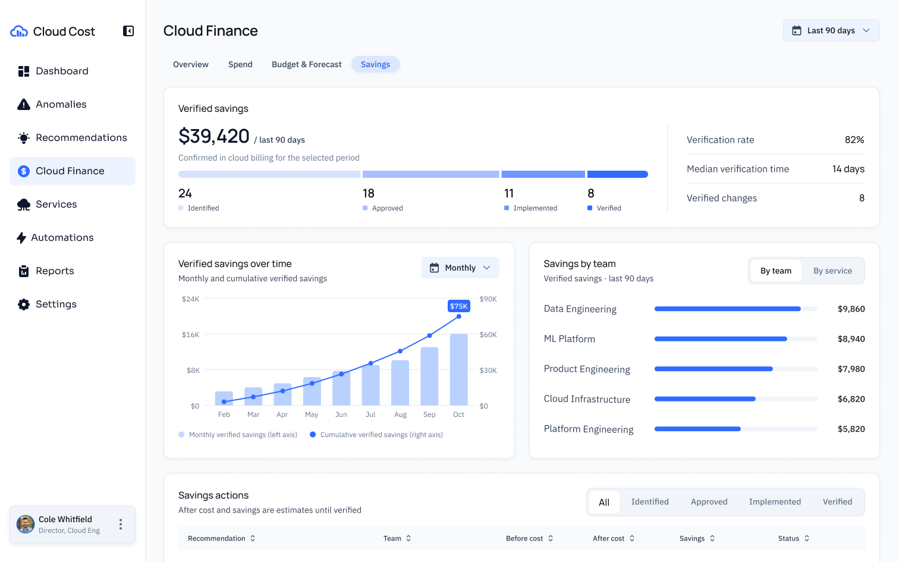
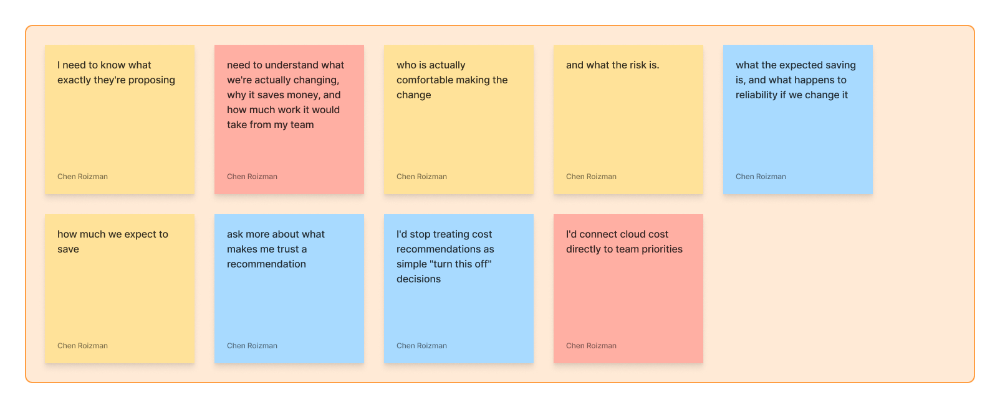
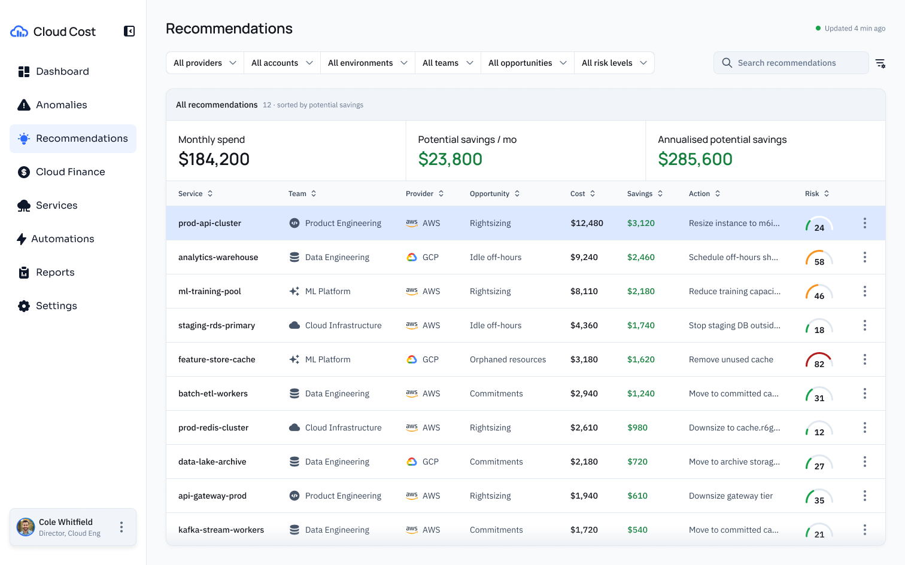
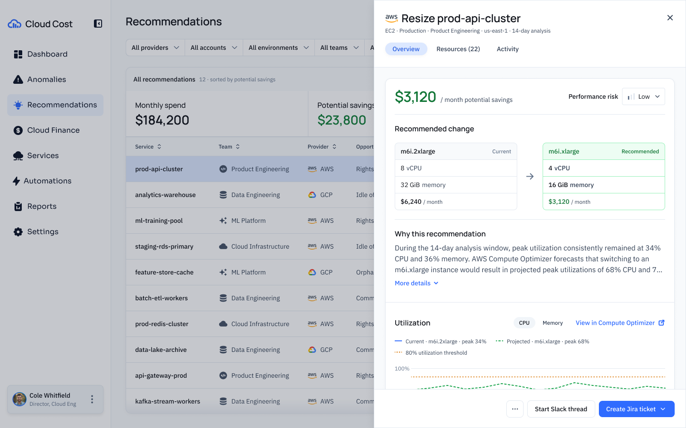
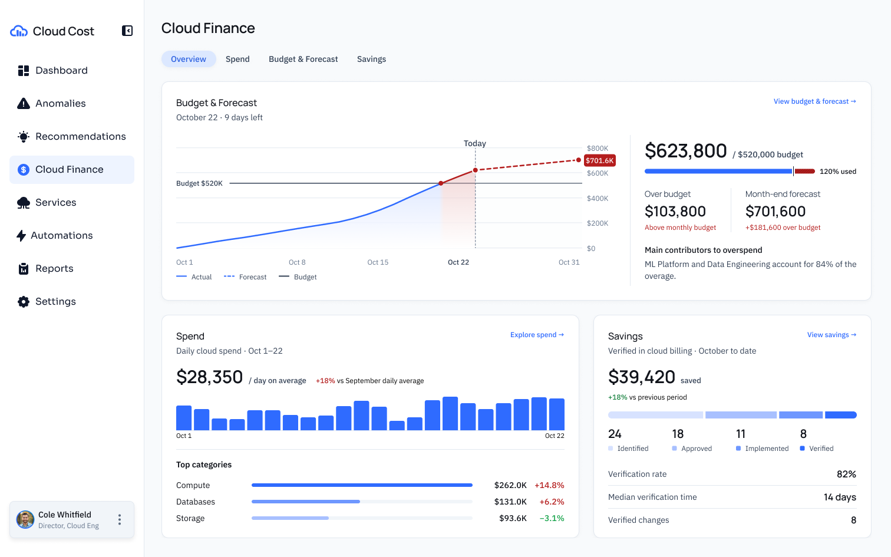
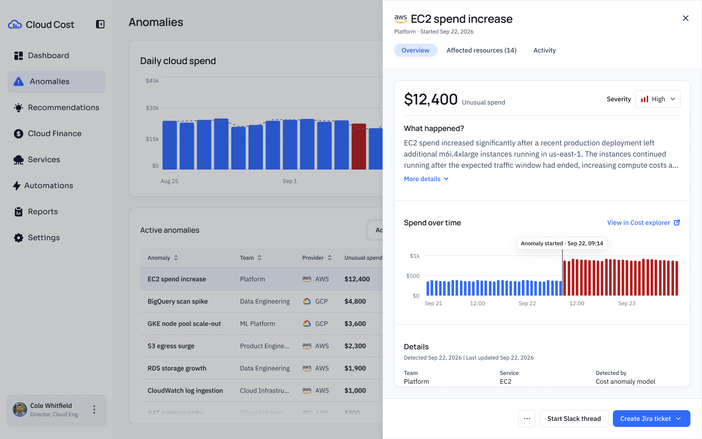
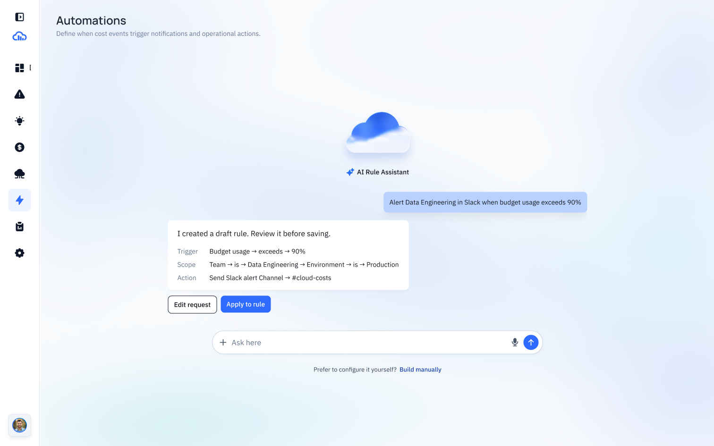
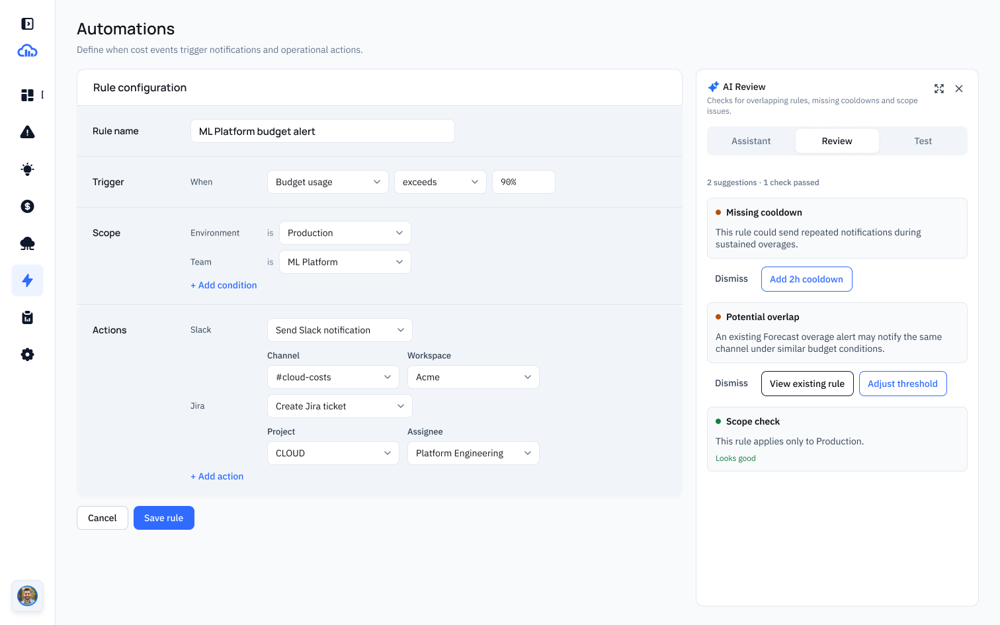

Cloud Cost Management
A cloud cost management platform designed to help teams understand their spending, investigate unexpected changes, and decide which savings are worth pursuing.

Cloud Finance Savings connects opportunities, progress, and verified savings. Figures shown are illustrative.
Cloud services help teams run and grow their products, but the bill can be difficult to connect to daily engineering work. FinOps brings finance, engineering, and business teams together to understand that spending and make better decisions.
I designed a conceptual SaaS product for that decision: understand the cost, investigate the cause, evaluate a change, and act. My work covered research, problem definition, journeys and flows, interface design, a design system, and design iterations.
Product Designer · Independent course project · September–October 2026
For a saving to be useful, teams need to act with confidence—and the product needs to support that work over time.
User goal
Help cloud and FinOps professionals evaluate saving opportunities with enough context to act confidently, without putting reliability or delivery at risk.
Business goal
Create a subscription product that becomes part of the team's ongoing cost-management workflow by helping organizations reduce avoidable cloud waste.
Users can understand a change, decide who should act, and check the result. The business can build lasting value by supporting that complete workflow.
I combined secondary research, competitive analysis, and ecosystem research to examine the relationship between cloud spending, engineering priorities, and ownership. I used those inputs to define what a cost decision needs, beyond a saving estimate.
AI-simulated interviews added exploratory FinOps and engineering perspectives. I organized those responses into an affinity map and used the synthesis to develop an empathy map and journey maps. These exercises informed design assumptions; they were not interviews with real participants.

Exploratory themes from AI-simulated interviews.
Secondary research connected cost investigation with resource activity. I placed the affected service, team, timing, and explanation close to the cost change.
The simulated scenarios raised questions about reliability, dependencies, and effort. I used those questions to define the evidence a recommendation should provide.
The research highlighted ownership and competing priorities. I carried that into visible handoffs and a proposed path for following up on savings.
The review established useful patterns to build on—and helped define where to focus this concept.
Existing products
Finout · CloudZero · Vantage · Harness CCM · AWS
Ownership, work status, and activity offered useful conventions for making cloud costs understandable.
Recommendation detail and realized savings provided reference patterns for evaluation and follow-up.
Our design focus
Cloud Cost Management · A conceptual product direction
Bring the affected service, team, timing, and explanation close to the cost change.
Place the proposed resource, reasoning, and utilization evidence alongside savings and performance risk.
Based on secondary and competitive research. This comparison explains the design direction; it does not claim that competing products lack these capabilities or that this concept performs better.
Cloud engineering leaders need to prioritize savings that justify the engineering effort—without compromising reliability, security, or delivery.
Cost context
Show the cost context.
Proposed change
Explain the proposed change.
Next action
Make the next action clear.
Verified savings
Distinguish potential savings from verified results.
Cloud engineering leaders need to prioritize savings that justify the engineering effort—without compromising reliability, security, or delivery.
Cost context
Show the cost context.
Proposed change
Explain the proposed change.
Next action
Make the next action clear.
Verified savings
Distinguish potential savings from verified results.
Cost context
Show the cost context.
Proposed change
Explain the proposed change.
Next action
Make the next action clear.
Verified savings
Distinguish potential savings from verified results.
I used the mind map and sitemap to organize the product, then journey maps to connect investigation, evaluation, handoff, and follow-up. The Master Product Flow translated that structure into screens and transitions. Below is one connected path, shown at a readable scale.


Compare potential savings and select a recommendation to investigate.
Compare the current and proposed resource, inspect the evidence, and continue through Slack or Jira.
I separated the entry points by intent: Cloud Finance for spend and budget, Anomalies for an unusual change, and Recommendations for a possible action. They share service and team context so users can carry an investigation forward.
The broader flow includes approval, ownership, and verification. The current concept supports handoff through Slack and Jira; a complete approval workflow remains to be developed.
Teams need to see whether spending is on track, where the month may end, and what is driving the difference. My early overview separated team spending and savings; later layouts tested a clearer financial hierarchy.
I brought actual spending, forecast, and budget into one view so users can compare them before drilling down. Detailed analysis moves into dedicated views: a clearer starting point, with an extra step for deeper investigation.

Current Cloud Finance overview: actual, forecast, and budget share one area, followed by spending and savings. Values are illustrative.
A cost spike is a signal, not an explanation. I explored an inline detail panel, short previews, and an overlay drawer. The inline panel competed with the chart and table for space.
I chose a staged path: inspect the signal, then open a focused drawer for impact, explanation, timeline, and resources. It adds a step before full detail, but preserves the overview and gives the investigation room. Slack and Jira keep the handoff close.

Current anomaly drawer: cost impact, a plain-language explanation, and a timeline lead the investigation.
Before committing to a saving, teams need to understand what will change and why. I explored current-versus-proposed comparisons to make that judgment concrete.
I placed the proposed resource beside the current one and supported it with reasoning and utilization evidence. The design makes savings and performance risk visible; effort, dependencies, and rollback still need more work. That is a product gap to validate, not a result already achieved.
For the product’s automation feature, I designed a path from a natural-language request to an inspectable draft. Trigger, scope, and action remain visible before the user applies the rule.
I kept editing and review in the rule builder rather than treating generated output as finished. The assistant flags possible overlaps and missing cooldowns; the user can review suggestions, edit the configuration, or build manually.
Describe what you want to automate, then inspect the trigger, scope, and action before applying the draft.

Configure the rule manually and use AI review alongside it to check for possible overlaps and missing cooldowns.

Savings moves through identified, approved, implemented, and verified stages. This is the concept's follow-up model; displayed results are sample data.
The product connects cost investigation, recommendation review, and savings follow-up around one goal: help teams turn identified opportunities into accountable action. Five KPIs defined during product planning connect the proposed experience to operational and financial value.
Bring cost impact, explanation, and resources together to help teams identify the cause of a cost issue faster.
Compare the current and proposed resource with supporting evidence to shorten the path from recommendation to approved action.
Connect recommendation detail to work-tool handoff, with the goal of increasing the percentage of recommendations reaching implementation.
Track the percentage of completed actions with verified savings, keeping implementation distinct from confirmed financial impact.
Use verified savings over time to assess money saved for the company, rather than relying on potential estimates alone.
These are intended outcomes, not measured production results. Figures in the product screens are illustrative.
Prototype note: connect your verified contact link here in Framer.